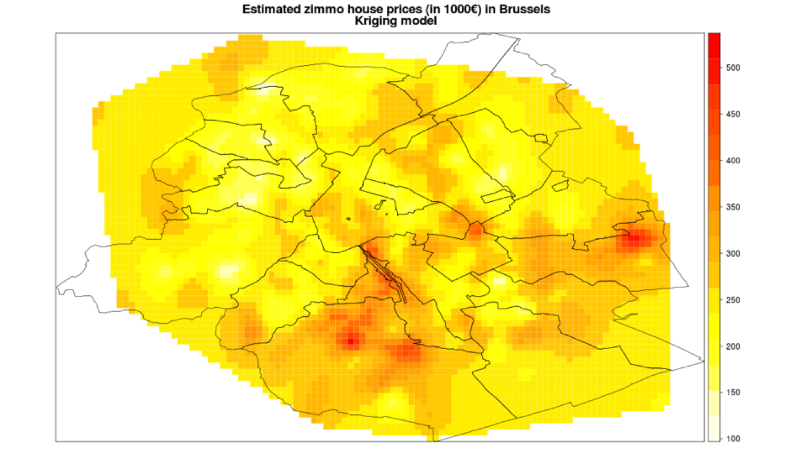

BigDataBe WorkShops
Helsens Kenny, 02/05/2013

Everybody has pet projects

A project, activity or goal pursued as a personal favorite, rather than because it is generally accepted as necessary or important.
Previously

- HBase for zimmo.be
- R analytics on real-estate data
- 1 topic, 6 months, 10 workshops
Idea #1
Stock markets cannot be predicted,
yet it’s still fun to give it a try!
What would we be using?
- Twitter Storm
- Yahoo Finance & Twitter API’s
- Streaming Analytics
- Sentiment Analysis
Idea #2
Governance data remains underused,
open governance data will change this
- FOD Economie is making the KBO publicly available
- Model KBO for Graph Databases
- Data enrichment opportunities
Idea #3
Mining health care data,
where small changes hold major value

Idea #4
Generating insights for non-profit organisations
- Join Essent power consumption with NGO donations
- Venture into data from BE based NGO’s
Conclusion
Let’s join our pet projects,
and build a zoo!